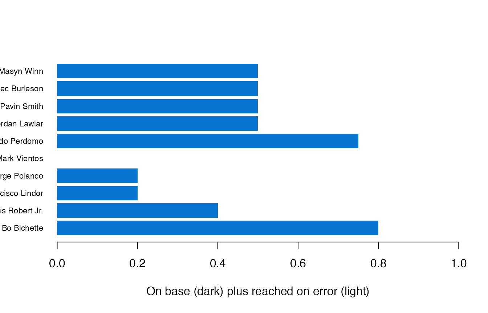

Coaching a season from paper scorecards
Source:vignettes/coaching-a-season.Rmd
coaching-a-season.RmdMost amateur teams still keep score on paper. After the season, the scorebook holds everything a coach needs to know: who gets on base, who puts the ball in play, and how hard each pitcher has been worked. But it takes an evening with a calculator to get any of it out. This vignette follows a coach through four questions, using the scorecards the dAImond Inning app has already read.
Use case 1: load and explore the season
The package ships reviewed_scorecards, 179 plate
appearances from five real scorecards. Each row is one plate appearance,
already reviewed against the official record, so
needs_review is FALSE everywhere.
dim(reviewed_scorecards)
#> [1] 179 18
table(reviewed_scorecards$team)
#>
#> Arizona Diamondbacks Cleveland Guardians Minnesota Twins
#> 35 33 35
#> New York Mets St. Louis Cardinals
#> 41 35
sort(table(reviewed_scorecards$play), decreasing = TRUE)
#>
#> strikeout groundout flyout single
#> 44 39 32 20
#> walk lineout home_run double
#> 16 8 6 4
#> strikeout_looking fielder's_choice error hit_by_pitch
#> 4 3 1 1
#> sacrifice_fly
#> 1Your own games come in one of two ways. A single game’s CSV export
from the app goes through import_scorecards():
path <- system.file("extdata", "demo_plays.csv", package = "daimondstats")
one_game <- import_scorecards(path, game_id = "demo-01")
head(one_game, 3)
#> game_id team player inning play confidence needs_review
#> 1 demo-01 Demo Owls Alex Demo 1 single 0.99 FALSE
#> 2 demo-01 Demo Owls Alex Demo 3 double 0.98 FALSE
#> 3 demo-01 Demo Owls Alex Demo 5 home_run 0.99 FALSEFor a whole season, connect to your account with an API key (Settings, API keys in the app) and download everything at once. This needs the internet and a key, so it is not run here:
daimond_auth("di_pat_...") # once per R session
season <- daimond_games(from = "2026-04-01", to = "2026-07-31")
plays <- season$plays[!season$plays$needs_review, ]Either way, the result has the same columns, so every function below works on it.
Use case 2: who actually gets on base?
In youth baseball the defense makes a lot of errors. Batting average
and OBP treat reaching on an error as an out, which hides batters who
put the ball in play and force the defense to make a play.
calculate_youth_stats() adds OBPE, on-base
percentage that counts reaching on an error, alongside isolated power
(ISO), strikeout and walk rates, and BABIP.
youth <- calculate_youth_stats(reviewed_scorecards, min_pa = 4)
cols <- c("team", "player", "PA", "ROE", "OBP", "OBPE", "ISO", "K_rate")
head(youth[order(-youth$OBPE), cols], 8)
#> team player PA ROE OBP OBPE ISO K_rate
#> 43 New York Mets Bo Bichette 5 0 0.80 0.80 1.0000000 0.20
#> 2 Arizona Diamondbacks Geraldo Perdomo 4 0 0.75 0.75 0.5000000 0.00
#> 7 Arizona Diamondbacks Jordan Lawlar 4 0 0.50 0.50 0.0000000 0.25
#> 8 Arizona Diamondbacks Pavin Smith 4 0 0.50 0.50 0.7500000 0.25
#> 12 St. Louis Cardinals Alec Burleson 4 0 0.50 0.50 0.3333333 0.50
#> 15 St. Louis Cardinals Masyn Winn 4 0 0.50 0.50 0.0000000 0.25
#> 16 St. Louis Cardinals Nathan Church 4 0 0.50 0.50 0.0000000 0.25
#> 22 Minnesota Twins Edouard Julien 2 0 0.50 0.50 0.0000000 0.00These are major league games, so errors are rare and OBPE barely moves. In youth games the gap between OBP and OBPE is often several points. Two things to keep in mind:
- Every one of these players has only one game here.
small_samplemarks anyone undermin_paplate appearances (25 by default). A handful of games can swing any rate a long way. - Pooling uses the exact team and player name. Spell a player’s name the same way on every scorecard, or correct it in the app first.
Use by = "game" to see a player’s game-by-game line
instead of the season.
Use case 3: check pitch counts against Pitch Smart
Most leagues follow the MLB/USA Baseball Pitch Smart guidelines: a
daily maximum by age, and required days of rest that depend on how many
pitches were thrown. demo_pitch_log is a fictional month
for a 12U staff.
demo_pitch_log
#> pitcher age date game pitches
#> 1 Mia Torres 12 2026-05-02 vs Hawks 66
#> 2 Leo Park 11 2026-05-02 vs Hawks 24
#> 3 Mia Torres 12 2026-05-06 at Rays 33
#> 4 Sam Okafor 12 2026-05-06 at Rays 61
#> 5 Leo Park 11 2026-05-09 DH game 1 vs Owls 47
#> 6 Mia Torres 12 2026-05-09 DH game 1 vs Owls 22
#> 7 Mia Torres 12 2026-05-09 DH game 2 vs Owls 41
#> 8 Leo Park 11 2026-05-12 at Cubs 52
#> 9 Sam Okafor 12 2026-05-12 at Cubs 18
#> 10 Jay Ruiz 10 2026-05-12 at Cubs 30
#> 11 Leo Park 11 2026-05-16 vs Foxes 66
#> 12 Mia Torres 12 2026-05-16 vs Foxes 49
#> 13 Sam Okafor 12 2026-05-20 at Bears 72
#> 14 Jay Ruiz 10 2026-05-20 at Bears 20
#> 15 Leo Park 11 2026-05-23 vs Jays 88
checks <- check_pitch_counts(demo_pitch_log)
checks[checks$status != "ok",
c("pitcher", "date", "pitches", "daily_max", "next_eligible", "status")]
#> pitcher date pitches daily_max next_eligible status
#> 7 Leo Park 2026-05-23 88 85 2026-05-28 over daily max
#> 9 Mia Torres 2026-05-06 33 85 2026-05-08 short restTwo problems show up. Mia Torres threw 66 pitches on May 2, which requires four days of rest, but she pitched again on May 6, a day early. Leo Park, who is 11, threw 88 pitches on May 23, three over his age group’s limit of 85. Note that Mia’s two doubleheader appearances on May 9 were added together, because the limit applies to the whole day.
The next_eligible column answers the question a coach
has before every game: who can pitch today?
game_day <- as.Date("2026-05-24")
latest <- tapply(checks$next_eligible, checks$pitcher, max)
data.frame(pitcher = names(latest),
available = as.Date(latest, origin = "1970-01-01") <= game_day)
#> pitcher available
#> Jay Ruiz Jay Ruiz TRUE
#> Leo Park Leo Park FALSE
#> Mia Torres Mia Torres TRUE
#> Sam Okafor Sam Okafor FALSEIf your league is stricter, pass an edited copy of
pitch_smart_rules:
strict <- pitch_smart_rules
strict$daily_max[strict$age_min == 11] <- 75L
check_pitch_counts(demo_pitch_log, rules = strict)$status
#> [1] "ok" "ok" "ok" "ok"
#> [5] "ok" "ok" "over daily max" "ok"
#> [9] "short rest" "ok" "ok" "ok"
#> [13] "ok" "ok"Use case 4: share a one-page season report
season_report() puts the batting table, an on-base
chart, and the pitch-count flags into one HTML file that opens in any
browser and prints on a single page. Parents and players can read it
without R.
out <- file.path(tempdir(), "season-report.html")
season_report(reviewed_scorecards, out, title = "Five scored games",
pitch_check = checks, min_pa = 4, overwrite = TRUE)
file.exists(out)
#> [1] TRUETo see the chart from the report here, compare OBP with OBPE directly:
top <- head(youth[order(-youth$PA, -youth$OBPE), ], 10)
barplot(rbind(top$OBP, top$OBPE - top$OBP), names.arg = top$player,
horiz = TRUE, las = 1, col = c("#0875D1", "#9CC9F0"), border = NA,
xlim = c(0, 1), cex.names = 0.7,
xlab = "On base (dark) plus reached on error (light)")
What the package does not do
- It does not read images. The dAImond Inning app reads the scorecard; this package analyzes what was read and reviewed.
- It refuses rows still marked for review instead of guessing.
- Quality at-bats need pitch-by-pitch counts, which scorecard cells do not record, so they are left out.
- Pitch counts come from the scorecard’s pitcher box. Pitching for another team or league is invisible to the check.
For run value (RE24) and comparing the games you scored with a team’s
full season, see
vignette("from-scorecard-to-run-value").